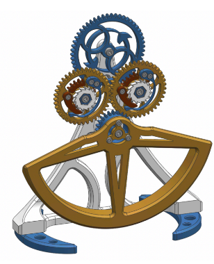

Electronics & Engineering
I am building a solid foundation in circuit analysis, physical measurements, and instrumentation, alongside proficiency in technical computing software such as Matlab.

ENSEEIHT · INP Toulouse
Electrical Engineering Student (3EA)
Welcome to my e-portfolio! I am Mathieu Borsato, a first-year Electrical Engineering (3EA) student at ENSEEIHT in Toulouse. With a strong interest in system design, I am eager to apply my theoretical knowledge in a practical and industrial setting.
I created this digital portfolio as a personal showcase to document my academic and professional journey over my three years of engineering studies. Its purpose is to highlight my technical projects, my career development, my international mobility plans, as well as my civic engagements and extracurricular activities.
I am currently seeking a 6-week internship in electronics to discover the industrial sector starting in June 2027.
Feel free to explore my work, view my CV, and connect with me!
I am currently in my first year of studies in the Department of Electronics, Electrical Energy, and Automatics (3EA) at ENSEEIHT - INP Toulouse. My academic journey is driven by a strong interest in system design, and I am highly eager to apply my theoretical knowledge in practical, hands-on settings. Through my engineering curriculum, I am developing a robust technical skill set across multiple domains:
I am building a solid foundation in circuit analysis, physical measurements, and instrumentation, alongside proficiency in technical computing software such as Matlab.
I have acquired strong programming skills and am comfortable working with Python, C, and SQL.
These theoretical and practical courses are preparing me to tackle complex engineering challenges and are building the groundwork for my future professional projects in the industrial sector.

Research Project (TIPE) · Lycée Bellevue · 2025-2026
Study on a macroscopic model of the self-winding mechanism of an automatic watch, with data processing using Python. The 3D model shows the oscillating weight and the gear train that winds the mainspring.
As part of my engineering curriculum at ENSEEIHT, I am highly motivated to complete a full academic semester abroad. I have identified three primary destinations—the United States, Canada, and Australia—that perfectly align with my academic background in Electrical Engineering (3EA) and my strong interest in system design.
The US is a global leader in electronics and technological innovation. Studying there for a semester would grant me access to cutting-edge research facilities and advanced courses in circuit analysis and instrumentation, effectively bridging the gap between my theoretical knowledge and industrial practices.
Known for its excellence in engineering education and a thriving tech sector, Canada offers an ideal environment to deepen my technical skills, particularly in programming (Python, C) and physical measurements. A semester here would also foster my adaptability in a highly dynamic, multicultural academic setting.
Australian universities are renowned for their practical, hands-on approach to engineering. Spending a full semester in Australia would allow me to explore new perspectives in electrical energy and automatics while strengthening my teamwork and cross-cultural communication skills in an international context.
These three potential mobility projects are designed to expand my global network, challenge my problem-solving abilities, and directly support my future career in the industrial sector.
I am deeply committed to taking an active role in my community, both within my school and regarding broader societal issues.
Since September 2026, I have been an active member of the student association, participating in the organization of student life events and contributing to our campus community.
I provide weekly tutoring for high school students in Mathematics and Physics. This commitment allows me to share my knowledge while developing my adaptability, teaching skills, and active listening.
Early in my engineering program, I took part in a collaborative 'Climate Fresk' session with my peers. This experience helped us realize the ongoing environmental crisis and the climate challenges we must tackle as future engineers.
I also attended and participated in this interactive theater performance addressing gender-based and sexual violence (GBV). It was a crucial opportunity to understand its severe consequences and the importance of promoting a respectful environment.
Thanks to ENSEEIHT and the Toulouse university network, I engaged in the 'Futur Proche' (Near Future) festival. Through various conferences and workshops, I explored climate issues from a scientific perspective, discovering technological innovations designed to build a more sustainable world.
Extracurricular activities and personal interests play a major role in my daily life, helping me develop essential soft skills that complement my engineering studies.
Since September 2026, I have been playing for the INP Toulouse university rugby team. This regular competitive practice has significantly strengthened my team cohesion, stress management, and overall team spirit.
In addition to rugby, I maintain a healthy and balanced lifestyle by practicing swimming and playing recreational football.
I am a regular online chess player. This strategic game helps me sharpen my focus, patience, and analytical thinking abilities.
During the summers of 2024 and 2026, I worked as a seasonal agricultural worker at Château Binest. Harvesting and packaging fruit required maintaining a fast pace, which taught me the value of rigor, punctuality, and hard work within a team environment.
I am currently seeking a 6-week internship in electronics to discover the industrial sector, starting in June 2027. Below, you can access my professional documents and view my video pitch to learn more about my background, my career goals, my role models, and my mobility projects.
Video Placeholder: My Unique Value Proposition